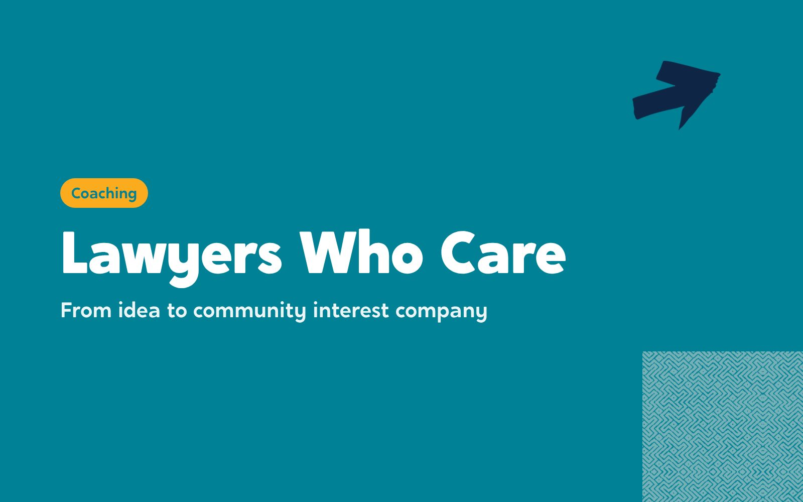

Children’s services consultancy, co-designed with the people it affects.
Most councils we work with already know something needs to change. What they need is help finding out exactly what, from the children, families and staff who live with it, and then help making the change stick. Since 2017 we’ve done that on 40 projects, for 36 local authorities and for national bodies including the Department for Education. Our consultancy covers five areas.


Five areas of consultancy
Jump to the one that fits what you need to change.

Transformation and service design
When services call usA new duty lands, an inspection says something must change, or a model that worked five years ago doesn’t any more.
What we do
- A shared vision, written with staff and young people
- A new service model, with a business case to fund it
- A consultation that hears from everyone the change affects
The work
 Durham County Council: Families First Partnership
Durham County Council: Families First Partnership NHS Staffordshire and Stoke-on-Trent: Bridge and Beyond
NHS Staffordshire and Stoke-on-Trent: Bridge and Beyond Middlesbrough Council: Middlesbrough Children Matter
Middlesbrough Council: Middlesbrough Children Matter
Fostering
When services call usToo few foster carers are coming in, too many are leaving, and the new national standards ask services to work in new ways.
What we do
- Recruit, assess and support foster carers, with our partner Why Care
- Get ready for England’s new fostering standards
- Help carers and social workers read and write about children differently
We led the national engagement on the rewrite of England’s fostering standards for the Department for Education.
The work
Explore fostering


Participation and co-production
When services call usMost services say children’s voices shape their work. Fewer can point to a decision that changed because of them.
What we do
- Participation strategies and youth voice services, designed with young people
- National and regional consultations
- Youth peer research, and peer mentoring by care-experienced adults
The work
 Regional Care Cooperative, South East: Youth Participation Collective
Regional Care Cooperative, South East: Youth Participation Collective Buckinghamshire Council: Youth Voice Bucks
Buckinghamshire Council: Youth Voice Bucks NAVSH: a national co-design with Virtual School Heads
NAVSH: a national co-design with Virtual School Heads
Employment and pathways
When services call usCare leavers are more likely than their peers to be out of education, employment or training, and councils now have wider corporate parenting duties to change that.
What we do
- Care to Work: work experience at 16 to 18 and paid roles at 18 to 25
- Employer partnerships and events
- Local offers care leavers can actually use
The work
 Suffolk County Council: The Family Business
Suffolk County Council: The Family Business PwC: New World, New Skills
PwC: New World, New Skills
Lawyers Who Care: from idea to CIC
Practice approaches
When services call usWhen a child’s behaviour escalates, the adults around them often feel they have two options: back off or take control.
What we do
- Non-violent resistance (NVR) for residential staff
- NVR for foster carers
- NVR for early help and family workers
NVR gives adults a third option, built on staying present, calming things down and repairing the relationship.
The work
Explore practice approaches


How a commission works
Most commissions follow the same five steps.
- 1A conversation
Tell us what’s happening. We’ll say honestly whether we’re the right people to help, and if not, who might be.
Free - 2A short diagnostic
We listen to your staff and young people and read the evidence you hold, then tell you what we see.
- 3A clear brief
Named outcomes, a timeline and a price, agreed before any work starts.
- 4The work, done together
Co-produced with your people and your young people, with progress reports throughout.
- 5A clean handover
Everything your teams need to carry it on without us.